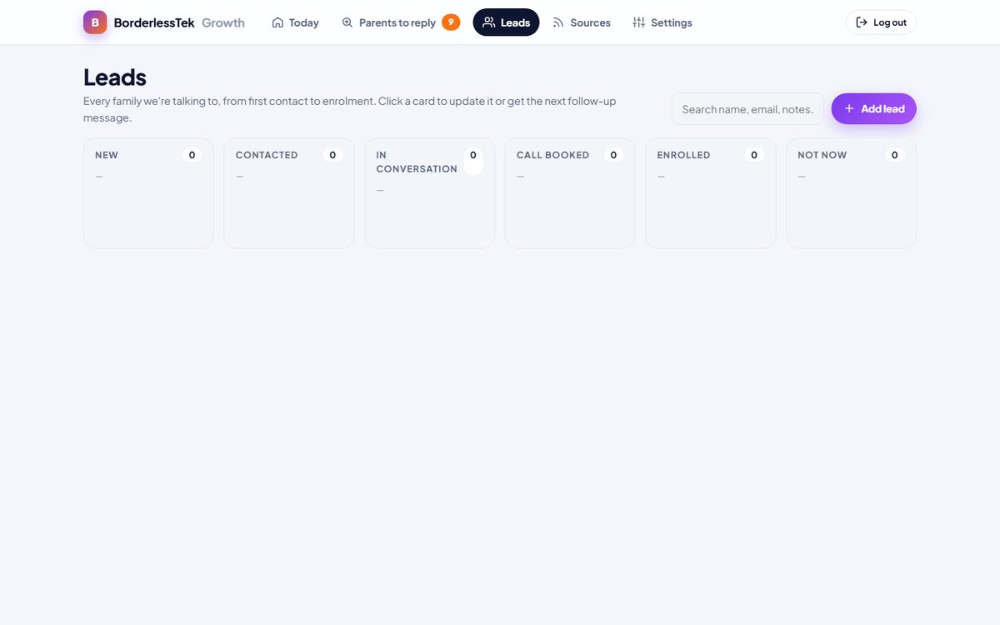

Collect: sources and permissions
- Reddit parent communities: public RSS feeds only, read anonymously, at least 30 seconds between requests to respect rate limits. No login, no scraping behind authentication.
- Google Alerts: the team's own alert feeds, delivered as RSS.
- Custom RSS feeds: any public feed the team adds in Settings.
- Manual paste: Facebook groups can't (and shouldn't) be read automatically, so a team member pastes a post they've found and gets the same score and draft.
Each source is a database record that can be switched on or off, with its last run, items found and errors visible on the Sources page.
Process: data quality
- De-duplication: every post is stored with a unique external ID, so a post seen in several feeds or several runs is processed once.
- Normalisation: titles and bodies are cleaned of HTML entities and whitespace; ages and topics are extracted into structured fields ("child 9", "STEM").
- Filtering: adult learners, adverts, job posts and off-topic content are rejected with a reason, not silently dropped, so the rules can be audited and improved.
- Scoring: a 0–100 score with the contributing signals stored alongside it. Posts are bucketed into to-reply, lower scores and not relevant.

Organise and manage
- Leads move through New → Contacted → In conversation → Call booked → Enrolled / Not now.
- Each lead keeps its origin (which post, which source), notes and a full history of status changes, so the team can see which channels actually produce enrolments.
- Follow-up dates are created automatically and surface on the Today screen when due.
- Search across names, emails and notes.
Compliance and children's data
- Only public or volunteered data. The tool stores what a parent posted publicly or told the team directly.
- No children's names, ever. Only the child's age is recorded, because that's what the advice depends on.
- No automated outreach. No auto-posting, no cold DMs, no bulk email, in line with PECR and each platform's rules. Every message is sent by a person, with an honest disclosure of who they work for.
- Access control. The app is private behind a login; credentials live only in the hosting provider's environment settings.
Note: this project and the AI Employee are the same codebase seen from two angles: the AI Employee case study covers the automated workflow; this one covers the data and compliance design.